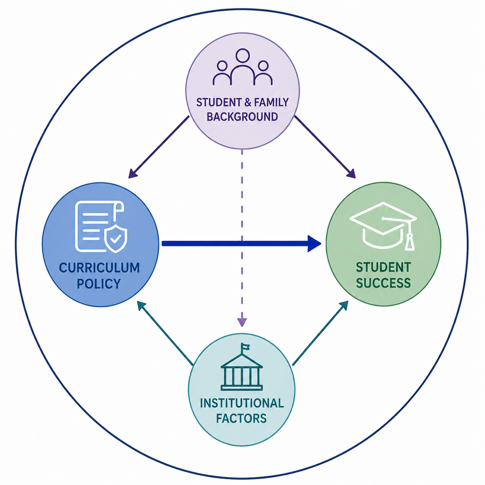
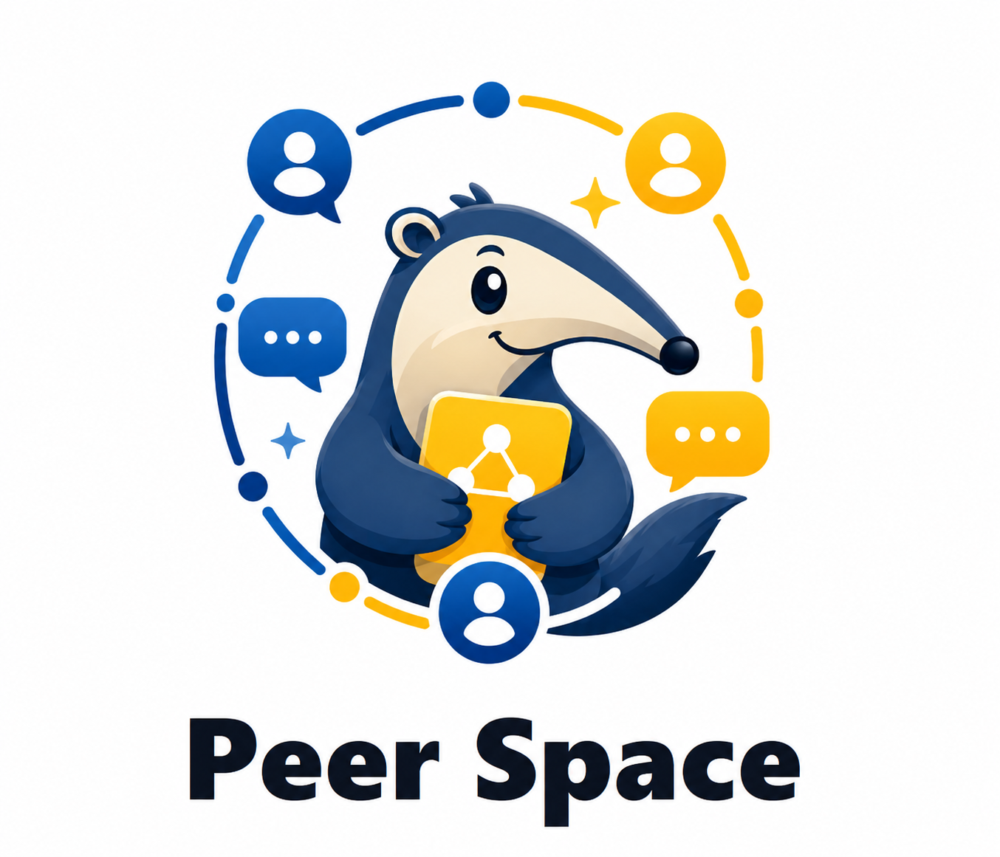
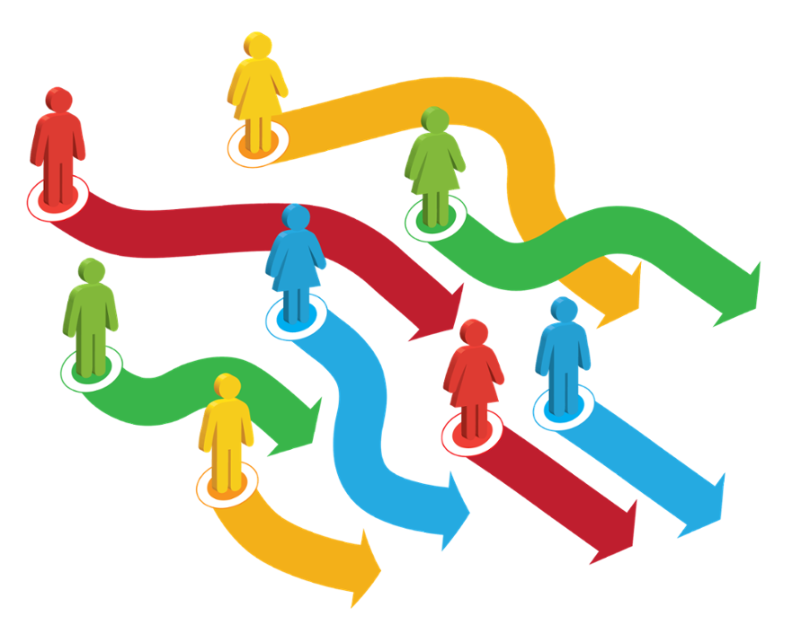

XunFei Li
Hi, I’m Fei, a postdoctoral fellow at the University of California, Irvine School of Education.
My research looks at how curriculum policies and interventions shape students’ pathways through higher education and patterns of educational inequality, with a particular focus on community colleges.
My work has been published in AERA Open, The Internet and Higher Education, and AEA Papers and Proceedings. I currently serve as a Co-principal Investigator on projects funded by Ascendium Education Group and Arnold Ventures.

I use causal inference and mixed methods to evaluate developmental education reforms, cross-sector enrollment, and condensed course formats in Virginia and California, examining how these policies shape student success.

I design and evaluate scalable, AI-powered interventions that help students connect with peers, participate in collaborative learning, and develop a stronger sense of belonging.

I use catalog and student transcript data to measure curriculum structures, examining how course requirements, prerequisite networks, and course-taking patterns shape students' academic pathways and peer experiences.
2019–2024
2016–2017
2014–2017
2010–2014